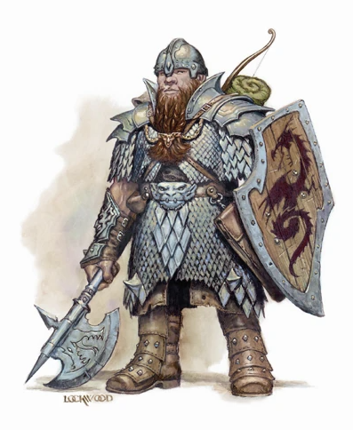
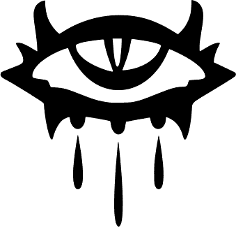

D&D - Kalkulačka průměrného zranění
Úvod
 Tato kalkulačka je obecně použitelná pro výpočet průměrného zranění zbraně podle pravidel D&D. Umožňuje porovnání různých buildů.
Jako příklad je do kalkulačky předvyplňeno zranění postavičky, která používá v každé ruce Kukri, má sílu 22 (mod. síly je +6), a disponuje featy Vylepšený kritický pro Kukri, Obouručnost, Boj dvěma zbraněmi a Vylepšený boj 2 zbraněmi. Na Kukri je přítomen Masivní kritický "1-8". Nejyšší AB postavičký je 20, a disponuje celkem 6 útoky za kolo. Útočí do nepřátelského NPC které má AC 30.
Vstupní údaje
Zranění na zbrani
Jedná se o základní rozpis zranění uvedeného na zbrani, vč. bonusu ze síly a z featů či kouzel. Nepatří sem však zákeřný útok nebo masivní kritický. Používá-li vaše postavička 2 zbraně, musíte si ručně snížit bonus ze síly (zprůměrovat bonus ze síly) a to následovně:
| Rozsah zranění | Popisek | Průměrné zranění |
|---|---|---|
| {{ inputDamages[index][1] }} | {{ calculateAverageDamageFromString(inputDamages[index][0]) }} | |
| Suma: | {{ getTotalAverageDamage() }} | |
| Celk. průměrné zranění: | {{ getTotalAverageDamage() }} | |
Pomocná tabulka pro zjištění postihu síly při držení offhand zbraně
Pokud útočník drží v hlavní ruce jednoruční zbraň, tak se ke zranění aplikuje celý modifikátor síly útočníka. Tedy má-li útočník sílu 22, přidá se ke zranění 6 bodů. V případě offhand zbraně je však ke zranění přidaná pouze polovina modifikátoru síly, tedy ze síly 22 by to byly jen 3 body. Pokud tedy používáte zbraň v druhé ruce, přidejte si do výše uvedené tabulky ručně postih síly.
| Utoků za kolo | Z toho off-hand útoků | Postih síly za offhand zbraň |
|---|---|---|
| 6 | 2 | 1/6 x Mod. síly |
| 7 | 2 | 1/7 x Mod. síly |
| 8 | 2 | 1/8 x Mod. síly |
Zranění s kritickým úderem
Kritický úder zvedá základní zranění o nějakou procentuální část. Nezvedá však např. sneak attack.
| Atribut | Hodnota |
|---|---|
| Rozsah a násobitel kritického úderu |
- 20 x
|
| Šance na kritický do sláměného panáka | {{ calculateCriticalChancePercentage(criticalRange) * 100 }} % |
| Zvýšení zranění | {{ roundNumber(calculateCriticalTotalDamageIncreasePercent(criticalRange, criticalMultipl) * 100, 1) }} % |
| Celk. prům. zranění | {{ roundNumber(getTotalAverageDamageIncludingCritical(), 1) }} |
Zranění se silným kritickým
Silné kritické zranění se přidává ke zranění v případě, že nastane kritický úder. Silný kritický může být přítomen jako vylepšení na zbrani, nebo ho můžeme získat z featu Overhelming Critical. Tyto se následně sčítají.
| Rozsah zranění | Průměrné zranění |
|---|---|
| {{ calculateAverageDamageFromString(massiveCriticals[index]) }} | |
| Suma: | {{ getMassiveCriticalsDamageSum() }} |
| Celk. prům. zranění: | {{ roundNumber(getTotalAverageDamageIncludingCriticalAndMassiveCritical(), 1) }} |
Zranění se zákeřným útokem
Zákeřný útok se přídává ke zranění, avšak není násoben v případě kritického zranění.
| Přidané zranění | Průměrné zranění |
|---|---|
|
d6
|
{{ getSneakAttackDamage() }} |
| Celk. prům. zranění: | {{ roundNumber(getTotalAverageDamageIncludingCriticalAndMassiveCriticalAndSneakAttack(), 1) }} |
Zranění za kolo do reálného soupeře
| Atributy vašeho protivníka | |
|---|---|
| Obranné číslo - AC | |
| Redukce zranění | |
| Epický únik / Odrážení šípů |
|
| Útok za kolo | ABVaši postavičky | Šance na zásah nepřítele | Průměrné zranění |
|---|---|---|---|
| {{ index + 1 }}. |
|
{{ roundNumber(calculateChanceToHitOpponent(oponentAc, inputAbs[index]) * 100, 1) }} % | 0 {{ roundNumber(calculateDamageToOpponent(oponentAc, inputAbs[index]), 1) }} |
| Suma: | {{ roundNumber(getTotalAverageDamagePerRoundToOponent(), 1) }} | ||
Shrnutí
| Atribut | Hodnota |
|---|---|
| Rozpis zranění na zbrani | {{ inputDamages.filter((dmg, idx) => dmg[0] && idx <= 4).map(dmg => dmg[0] + " (" + dmg[1] + ")").join(", ")}} {{ inputDamages.filter((dmg, idx) => dmg[0] && idx > 4).map(dmg => dmg[0] + " (" + dmg[1] + ")").join(", ")}} |
| Přidané zranění | kritický {{ criticalRange }}-20/x{{ criticalMultipl }}, masivní kritický +{{ getMassiveCriticalsDamageSum() }} {{ sneakAttack1d6Count != 0 ? ", zákeřný " + getSneakAttackDamage() : ""}} |
| AB za kolo | +{{ inputAbs.filter(iAbs => iAbs > 0).join(", +")}} |
| Součet zranění na zbrani | {{ getTotalAverageDamage() }} |
| Zranění vč. kritického | {{ roundNumber(getTotalAverageDamageIncludingCritical(), 1) }} |
| Zranění vč. masivních kritických | {{ roundNumber(getTotalAverageDamageIncludingCriticalAndMassiveCritical(), 1) }} |
| Zranění vč. zákeřného útoku | {{ roundNumber(getTotalAverageDamageIncludingCriticalAndMassiveCriticalAndSneakAttack(), 1) }} |
| Zranění za kolo ( AC {{ oponentAc }}{{ oponentEpicDodge ? ", únik" : ""}}{{ oponentDamageReduction > 0 ? ", redu. " + oponentDamageReduction + "/-" : ""}} ) | {{ roundNumber(getTotalAverageDamagePerRoundToOponent(), 1) }} |
Závěrem
Omezení
Confirmation roll
 V kalkuilačce se vypočítává zranění udílené kritickým úderem bez tzv. "Confirmation roll", tedy z tohoto důvodu výpočet zranění z kritického je 100% přesný v případě mlácení do sláměného panáka, ale čím vyšší má oponent AC, tím více se projeví nepřesnost kvůli chybějícímu Confirmation roll.
Ad absurdum, potřebujeme-li hodit kostkou 19-20 abychom obránce zasáhli, tak toto má rovněž i drastický dopad na udílení kritického zranění: Nejprve totiž potřebujeme hodit 19-20, abychom vůbec zasáhli, a potom potřebujeme znovu hodit 19-20 (Confirmation roll), abychom udělali kritický úder.
Toto značně snižuje pravděpodobnost udělení kritického do oponenta s vysokým AC. Kalkulačka toto pro zachování jednoduchosti nereflektuje.
Autor
Jiří Kačírek, email: kacirek.j@gmail.com
Přezdívka: Jurass17, jednou za čas hraju na Arkhalii a Demoně.
Licence
Veškeré zdrojové kódy jsou přístupné ve "View Page Source" nebo na Github.com. Software můžete dále modifikovat a šířit, nezapomeňte mě však prosím uvézt jako autora či spoluautora. Děkuji.